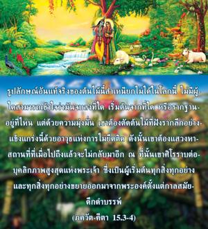

รูปลักษณ์อันแท้จริงของต้นไม้นี้สำเหนียกไม่ได้ในโลกนี้ ไม่มีผู้ใดสามารถเข้าใจว่ามันจบลงที่ใด เริ่มต้นจากที่ใด หรือรากฐานอยู่ที่ไหนแต่ด้วยความมุ่งมั่น เขาต้องตัดต้นไม้ที่ฝังรากลึกอย่างแข็งแกร่งนี้ด้วยอาวุธแห่งการไม่ยึดติด ดังนั้นเขาต้องแสวงหาสถานที่ที่เมื่อไปถึงแล้วจะไม่กลับมาอีก ณ ที่นั้นเขาศิโรราบต่อบุคลิกภาพสูงสุดแห่งพระเจ้าซึ่งเป็นผู้เริ่มต้นทุกสิ่งทุกอย่าง และทุกสิ่งทุกอย่างขยายออกมาจากพระองค์ตั้งแต่กาลสมัยดึกดำบรรพ์

บัดนี้ได้กล่าวอย่างชัดเจนว่ารูปลักษณ์อันแท้จริงของต้นไทรนี้ไม่สามารถเข้าใจได้ในโลกวัตถุ เนื่องจากรากของมันขึ้นข้างบนและการแผ่ขยายของต้นไม้จริงอยู่อีกด้านหนึ่ง เมื่อถูกพันธนาการด้วยการแพร่ขยายทางวัตถุของต้นไม้เราจึงไม่สามารถเห็นได้ว่าต้นไม้นี้ขยายออกไปไกลเท่าใด และก็ไม่สามารถเห็นจุดเริ่มต้นของต้นไม้นี้ ถึงกระนั้นเราต้องค้นหาสาเหตุว่า “ข้าเป็นบุตรของบิดา บิดาข้าเป็นบุตรของบุคคลคนนี้ เป็นต้น” จากการค้นหาเช่นนี้จะมาถึงพระพรหมผู้ซึ่ง ครฺโภทก-ศายี วิษฺณุ ทรงเป็นผู้ให้กำเนิด ในที่สุดเมื่อมาถึงองค์ภควานฺงานวิจัยก็เสร็จสิ้น เราต้องค้นหาบุคลิกภาพสูงสุดแห่งพระเจ้าผู้ทรงเป็นแหล่งกำเนิดของต้นไม้นี้ด้วยการคบหาสมาคมกับบุคคลผู้มีความรู้แห่งองค์ภควานฺนั้น จากความเข้าใจจะทำให้เราค่อยๆไม่ยึดติดกับภาพสะท้อนที่ผิดซึ่งไม่ใช่ของจริง จากความรู้นี้จึงสามารถตัดขาดความสัมพันธ์กับมันและสถิตอย่างแท้จริงในต้นไม้จริง
คำว่า อสงฺค มีความสำคัญมากในประเด็นนี้เพราะว่าการยึดติดกับความรื่นเริงทางประสาทสัมผัส และความเป็นเจ้าเหนือธรรมชาติวัตถุมีความแข็งแกร่งมาก ฉะนั้นเราต้องเรียนรู้การไม่ยึดติดด้วยการสนทนาศาสตร์ทิพย์ซึ่งมีพื้นฐานอยู่ที่พระคัมภีร์ที่เชื่อถือได้ และต้องสดับฟังจากบุคคลผู้อยู่ในความรู้จริงๆ จากผลของการสนทนาในการคบหาสมาคมกับเหล่าสาวกเช่นนี้เราจะมาถึงบุคลิกภาพสูงสุดแห่งพระเจ้า สิ่งแรกที่ต้องกระทำคือศิโรราบต่อพระองค์ การบรรยายถึงสถานที่ซึ่งเมื่อไปถึงแล้วจะไม่กลับมายังภาพสะท้อนของต้นไม้ที่ผิดๆนี้อีก ได้บอกไว้ ณ ที่นี้ว่าองค์ภควานฺ กฺฤษฺณทรงเป็นรากเดิมแท้ที่ทุกสิ่งทุกอย่างปรากฏออกมา เพื่อให้พระองค์ทรงพระกรุณาเราต้องศิโรราบอย่างเดียว และนี่คือผลแห่งการปฏิบัติอุทิศตนเสียสละรับใช้ ด้วยการสดับฟัง การสวดภาวนา ฯลฯ พระองค์ทรงเป็นแหล่งกำเนิดแห่งการแผ่ขยายของโลกวัตถุซึ่งพระองค์ทรงอธิบายไว้แล้วว่า อหํ สรฺวสฺย ปฺรภวห์ “ข้าคือแหล่งกำเนิดของทุกสิ่งทุกอย่าง” ฉะนั้นในการออกจากพันธนาการของต้นไทรแห่งชีวิตวัตถุที่แข็งแกร่งนี้ เราต้องศิโรราบต่อองค์กฺฤษฺณ ทันทีที่ศิโรราบต่อองค์กฺฤษฺณเราจะไม่ยึดติดกับการแผ่ขยายทางวัตถุนี้โดยปริยาย